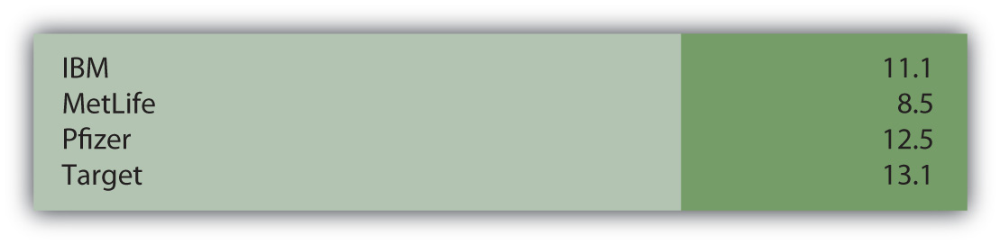

At the end of this section, students should be able to meet the following objectives:
Question: Throughout this textbook, various vital signs have been presented. They include ratios, numbers, percentages, and the like that are commonly studied by investors as an indication of current financial health and future prosperity. One common measure is return on equity (ROE)Ratio computed to measure the profitable use of a business’s resources; it is determined by dividing net income by average shareholders’ equity for the period.. How does an interested party calculate the return on equity reported by a business?
Answer: Return on equity reflects the profitability of a company based on the size of the owners’ claim to net assets as shown primarily through contributed capital and retained earnings. It is simply the reported net income divided by average shareholders’ equity for the period.
return on equity = net income/average shareholders’ equityFor example, PPG Industries began 2008 with total shareholders’ equity of $4,151 million and ended that year with a balance of $3,333 million. For the year ended December 31, 2008, PPG reported net income of $538 million for a return on equity of 14.4 percent.
average shareholders’ equity: ($4,151 million + $3,333 million)/2 = $3,742 million return on equity: $538 million/$3,742 million = 14.4%
Question: No single “vital sign” that is computed to help investors analyze a business and its financial health is more obsessively watched than earnings per share (EPS). Corporations even call press conferences to announce their latest EPS figures. According to U.S. GAAP, public companies are required to present EPS for each period that net income is reported. As just one example, Pfizer Inc. disclosed EPS of $1.20 on its income statement for the year ended December 31, 2008. Why is the EPS reported by a corporation so closely monitored by the investment community?
Answer: The simple reason for the public fascination with EPS is that this number is generally considered to be linked to the market price of a company’s capital stock. Therefore, constant and wide-scale speculation takes place about future EPS figures. If analysts merely predict an increase in EPS, that forecast alone can lead to a surge in stock price.
A price-earnings ratio (P/E ratio)A ratio computed by dividing current market price of an entity’s stock by the latest earnings per share; it is used to help predict future stock prices based on anticipated EPS figures. is even computed to help quantify this relationship. The P/E ratio is the current price of the stock divided by the latest EPS figure. It enables investors to anticipate movements in the price of a stock based on their projections of earnings per share. If a company’s P/E ratio is twenty and is expected to remain constant, then an increase in EPS of $1 should lead to a $20 rise in stock price.
Figure 16.11 As of July 8, 2009, the P/E ratio for Several Prominent Companies
The ongoing debate as to whether EPS and the P/E ratio are over emphasized as investing tools is a controversy better left to upper-level finance courses. The fascination is certainly real regardless of whether the perceived benefits are as great as many believe.
Question: How is EPS calculated?
Answer: EPS is a common stock computation designed to measure operating results after all other claims have been satisfied. In simplest form, EPS (often referred to as basic EPSA figure that must be reported by corporations that have their stock publicly traded; it is net income less preferred stock dividends divided by the weighted-average number of shares of common stock outstanding during the same period.) is the net income for the period divided by the weighted average number of outstanding shares of common stock. The company’s income is allocated equally to each of these shares.
To illustrate, assume a business organization reports net income of $700,000. If an average of 200,000 shares of common stock is outstanding for this period of time, EPS is $700,000/200,000 or $3.50 per share. If the market price of this stock is $35, then the P/E ratio is 35/3.50, or ten.
Because EPS only relates to common stock, this computation is altered slightly if preferred stockA capital stock issued by some companies that has one or more specified preferences over common shareholders, usually in the form of cash dividends. shares are also outstanding. Preferred stock is normally entitled to its dividend before common stock has any claim. Therefore, in determining basic EPS, any preferred stock dividend must be removed to arrive at the portion of income that is attributed to the ownership of common stock.
Basic EPS (net income – preferred stock dividend)/average number of common shares outstandingLink to multiple-choice question for practice purposes: http://www.quia.com/quiz/2093052.html
Link to multiple-choice question for practice purposes: http://www.quia.com/quiz/2093034.html
Question: For the year ended March 31, 2009, the McKesson Corporation reported basic EPS of $2.99 per share. However, the company also reported a second figure, diluted EPS, that was only $2.95 per share. What is the meaning of diluted EPS? Why is diluted EPS also reported by some businesses along with basic EPS?
Answer: All publicly traded companies must disclose basic EPS. Income reported for the period (after removal of any preferred stock dividends) is allocated evenly over the weighted average number of shares of outstanding common stock. Basic EPS is mechanically derived based on historically reported income and share figures.
Many corporations also have other contractual obligations outstanding that could become common stock and, therefore, potentially affect this computation. Stock options, convertible bonds, and convertible preferred stock can each be exchanged in some manner for common stock shares. That decision is usually up to the holder and out of the control of the company. If these conversions were to transpire, the additional shares could cause EPS to drop—possibly by a significant amount. This potential reduction should be considered by investors in making any assessment of EPS.
Diluted EPSHypothetical computation that reduces basic earnings per share to reflect the possible dilution if outstanding convertible items were actually turned into common stock; it includes the potential impact of stock options, convertible bonds and convertible preferred stock to warn decision makers of the consequences if those convertibles are turned into common stock. serves as a warning to decision makers of the possible impact that the existence of these convertibles can have on ownership. It is a hypothetical computation that gives weight to the chance that such conversions will take place. The actual mechanical steps in this process are better left to an intermediate accounting course. However, an understanding of the purpose of reporting diluted EPS is worthwhile.
Stock options, convertible bonds, convertible preferred stocks, and the like could become common stock and reduce a company’s earnings per share. Thus, U.S. GAAP requires that this possible impact is calculated and shown by the reporting of a lower diluted EPS. For the McKesson Corporation, if all other transactions stayed the same except that its convertible items were exchanged for common stock, basic EPS would drop from $2.99 to $2.95. That is the possible dilution that could be caused by the presence of items convertible into common stock. For an investor or potential investor, that is information of interest. Including this figure alerts them to the possibility of such conversions and helps them quantify the potential impact.
Return on equity (ROE) is one percentage often computed by market analysts to help evaluate the profitability of a business. However, the reporting of earnings per share (EPS) draws a much greater circle of interest. Basic EPS must be reported by every publicly traded company for each year in which net income is reported. Basic EPS is the net income for the period divided by the weighted average number of shares of common stock outstanding. Because EPS is only determined for common stock, any preferred stock dividends must be removed from net income as a preliminary step in carrying out this computation. The resulting figure is viewed as having a major impact on the movement of the company’s stock price. The price-earnings (P/E) ratio even quantifies that effect. If a corporation also has items such as stock options or convertible bonds that can be turned into common stock, conversion could potentially have an adverse impact on EPS. Thus, where such contractual obligations are outstanding, diluted EPS must also be reported to help investors understand the possible impact of future conversions.
Following is a continuation of our interview with Kevin G. Burns.
Question: Investors in the United States seem to have an obsession about the reporting of earnings per share. Even slight movements in projected EPS figures can create significant swings in the market price of a company’s stock. Do you think there is an overemphasis on EPS in the public’s investing decisions? How closely do you pay attention to EPS figures that are reported by the businesses that you are following?
Kevin Burns: This is a very good question. By now students must realize that accounting is really all about estimates. Although investors would like accounting to be objectively exact, reporting such estimates really requires an awful lot of subjectivity. For example, for many years, General Electric would almost always report EPS a penny or two above market expectations. This was quarter after quarter like clockwork. It got to the point where if the company didn’t “beat” the estimates on the street by a penny or two, the market was disappointed. It is absurd to believe that this is meaningful. This is especially true when earnings can also be managed simply by delaying or speeding up a major transaction from one time period to another. So, yes, I believe that EPS, although important, is not the ultimate piece of information that some investors seem to think. I am much more concerned about asset values, growth prospects, and what a company does with the cash it is able to generate.
Joe talks about the five most important points in Chapter 16 "In a Set of Financial Statements, What Information Is Conveyed about Shareholders’ Equity?".